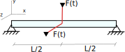

Linear Dynamic Vibration of a Simply Supported Beam
In this tutorial, the dynamic response of a simply supported beam is computed using ONSAS with the linear elastic and the co-rotational formulations. The aim of this example is to verify the numerical implementations using an analytic solution.
The problem consists in a beam with pinned nodes in both ends. Two loads of magnitude $F(t) = f_o \sin(wt)$ are applied in the middle point as it is shown in the figure, where $f_o$ is the force magnitude amplitude and $\omega$ is the force angular frequency.
Before defining the structs, the workspace is cleaned and the ONSAS directory is added to the path
close all, if ~strcmp( getenv('TESTS_RUN'), 'yes'), clear all, end
addpath( genpath( [ pwd '/../../src'] ) );The material scalar parameters are set.
E = 200e9 ; nu = 0.3; rho = 700;The cross-section of the beam is rectangular. The widths and other geometry scalar parameters are computed.
l = 10 ; ty = .3 ; tz = .1 ; % length of rectangular cross-section widths
Iyy = ty * tz^3 / 12 ; Izz = tz * ty^3 / 12 ; % bending inertias
numElements = 10 ; % Number of elements
Time and applied force parameters are
Fo = 100 ; % force magnitude (N)
w = 2 ; % force angular frequency (rad/s)
tf = 8 ; % s
deltat = 0.1 ; % sThe middle node is computed
assert( rem( numElements, 2 ) == 0, 'the number of elements must be even.' )
appNode = ( numElements ) / 2 + 1 ;
appNodePos = (appNode-1) * l / numElements ;Analytic solution
The governing equations for the deflection $v$ of a beam with uniform cross-section, density and Young modulus with a transversal distributed applied load $q$ is given by
\[ EI \frac{\partial^4 v}{\partial x^4}(x,t) + \rho A \frac{\partial^2 v}{\partial t^2}(x,t) = q(x,t)\]
and using a Fourier decomposition and following the process explained in chapter 10 of Mechanical Vibrations (5th Edition; Rao Singiresu) we obtain the analytic solution for the displacement of our problem
\[ v(x,t) = \frac{2fo}{\rho A l} \sum_{n=1}^{\infty} \frac{1}{w_{n}^2 - w^2} \sin\left(\frac{n \pi a}{l} \right) \sin\left(\frac{n \pi x}{l} \right)\sin(wt)\]
where $w_n$ are natural frequencies of the vibration for mode $n$ (computed for each transversal direction).
The solution can be numerically computed setting a mesh of spatial poins and a vector of times
ts = 0:deltat:tf ; % times vector
xs = 0:l/numElements:l ; % beam mesh
ns = 1:10 ; % modesAs well as the vector of natural frequencies
wnY = ( (ns*pi).^2 ) * sqrt(E*Izz/rho/(ty*tz)/(l^4)) ; % Natural frecuency direction Y
wnZ = ( (ns*pi).^2 ) * sqrt(E*Iyy/rho/(ty*tz)/(l^4)) ; % Natural frecuency direction ZThe values of the analytic solution are computed as
analyticDisY = 0; analyticDisZ = 0;
analySolPos = appNodePos ; % the analytic solution is computed at the point of application of the load
for i = 1:length( ns )
analyticDisY = analyticDisY + (1/(wnY(i)^2 - w^2)) * sin(i*analySolPos/l*pi) * sin(i*pi*appNodePos/l) * sin(w*ts)' ;
analyticDisZ = analyticDisZ + (1/(wnZ(i)^2 - w^2)) * sin(i*analySolPos/l*pi) * sin(i*pi*appNodePos/l) * sin(w*ts)' ;
end
analyticDisY = analyticDisY * (2*Fo/(rho*ty*tz*l) ) ; analyticDisZ = analyticDisZ * (2*Fo/(rho*ty*tz*l) ) ;Numerical solution
MEB parameters
The modelling of the structure begins with the definition of the Material-Element-BoundaryConditions (MEB) parameters.
materials
Since the example contains only one rod and no nodal masses are used, only one materials struct is defined. The first analysis is done using the co-rotational formulation
materials = struct() ;
materials.modelName = 'elastic-rotEngStr' ;
materials.modelParams = [ E nu] ;
materials.density = rho ;elements
Two different types of elements are considered, node and beam. The nodes will be assigned in the first entry (index $1$) and the beam at index $2$. The elemType field is then:
elements = struct() ;
elements(1).elemType = 'node' ;
elements(2).elemType = 'frame' ;for the crossSection, a frame element of rectangular-cross section with $t_y$ and $t_z$ dimensions in $y$ and $z$ directions is set, then the elemTypeGeometry field is:
elements(2).elemCrossSecParams = { 'rectangle' , [ty tz] } ;The consistent mass approach is considered for the dynamic analysis
elements(2).massMatType = 'consistent';boundaryConditions
The elements are submitted to two different BC settings. The first BC corresponds to the fixed points
boundaryConds = struct() ;
boundaryConds(1).imposDispDofs = [ 1 2 3 5 ] ;
boundaryConds(1).imposDispVals = [ 0 0 0 0 ] ;and the second corresponds to a time dependant external force
boundaryConds(2).loadsCoordSys = 'global' ;
boundaryConds(2).loadsTimeFact = @(t) Fo*sin(w*t) ;
boundaryConds(2).loadsBaseVals = [ 0 0 1 0 1 0 ] ;mesh parameters
The coordinates of the nodes of the mesh are given by the matrix:
mesh = struct() ;
mesh.nodesCoords = [ (0:(numElements))'*l/numElements zeros(numElements+1,2) ] ;The connectivity is introduced using the conecCell cell. Each entry of the cell contains a vector with the four indexes of the MEBI parameters, followed by the indexes of the nodes of the element (node connectivity). For didactical purposes each element entry is commented. First the cell is initialized:
mesh.conecCell = { } ;then the first two nodes are defined, both with material zero (since nodes dont have material), the first element type (the first entry of the cells of the elements struct), and the first entry of the cells of the boundary conditions struct. Finally the node index is included.
mesh.conecCell{ 1, 1 } = [ 0 1 1 1 ] ;the following case only differs in the boundary condition and the node number
mesh.conecCell{ 2, 1 } = [ 0 1 1 numElements+1 ] ;the following case only differs in the boundary condition and the node number
mesh.conecCell{ 3, 1 } = [ 0 1 2 appNode ] ;the beam elements are formed by the first material, the second type of element, and no boundary conditions are applied to any element.
for i=1:numElements
mesh.conecCell{ i+3,1 } = [ 1 2 0 i i+1 ] ;
endinitial Conditions
homogeneous initial conditions are considered, then an empty struct is set:
initialConds = struct() ;analysisSettings
analysisSettings = struct() ;
analysisSettings.methodName = 'newmark' ;
analysisSettings.deltaT = deltat ;
analysisSettings.finalTime = tf ;
analysisSettings.stopTolDeltau = 1e-8 ;
analysisSettings.stopTolForces = 1e-8 ;
analysisSettings.stopTolIts = 10 ;otherParams
otherParams = struct() ;
otherParams.problemName = 'coRotationaluniformDynamicBeam';ONSAS execution
[coRotMatUs, loadFactorsMat] = ONSAS( materials, elements, boundaryConds, initialConds, mesh, analysisSettings, otherParams ) ;The second analysis case implements the linear elastic formulation
materials.modelName = 'elastic-linear' ;
otherParams.problemName = 'elastic-linearuniformDynamicBeam';ONSAS execution
[linElasMatUs, loadFactorsMat] = ONSAS( materials, elements, boundaryConds, initialConds, mesh, analysisSettings, otherParams ) ;Error estimation
dofYendNode = 6*(appNode) - 3; dofZendNode = 6*(appNode) - 1;error computed for each method in the application node of the external force
diflinearDispUy = linElasMatUs(dofYendNode, :)' - analyticDisY ;
diflinearDispUz = linElasMatUs(dofZendNode, :)' - analyticDisZ ;
difcoRotDispUy = coRotMatUs(dofYendNode, :)' - analyticDisY ;
difcoRotDispUz = coRotMatUs(dofZendNode, :)' - analyticDisZ ;errlinearDispUy = norm( diflinearDispUy, 1 ) / norm( analyticDisY, 1 ) ;
errcoRotDispUy = norm( difcoRotDispUy , 1 ) / norm( analyticDisY, 1 ) ;
errlinearDispUz = norm( diflinearDispUz, 1 ) / norm( analyticDisZ, 1 ) ;
errcoRotDispUz = norm( difcoRotDispUz , 1 ) / norm( analyticDisZ, 1 ) ;the numerical resolution is validated for both method and both directions.
verifBoolean = ( errlinearDispUy < 5e-2 ) && ( errcoRotDispUy < 5e-2 ) ...
&& ( errlinearDispUz < 5e-2 ) && ( errcoRotDispUz < 5e-2 );Plot parameters:
lw = 2.0 ; lw2 = 1.0 ; ms = 11 ; plotfontsize = 18 ;plot y-axis linear, co-rotational and analytic result
figure, hold on, grid on
plot(ts, coRotMatUs(dofYendNode, :),'r-x' , 'linewidth', lw,'markersize',ms )
plot(ts, linElasMatUs(dofYendNode, :),'k-o' , 'linewidth', lw,'markersize',ms )
plot(ts, analyticDisY,'b' , 'linewidth', lw,'markersize',ms )
legend('coRotational_{disp}','elastic-linear_{disp}', 'Analytic_{disp}', 'location', 'eastoutside')
labx = xlabel('time (s)'); laby = ylabel('displacement (m)') ;
set(gca, 'linewidth', lw2, 'fontsize', plotfontsize )
set(labx, 'FontSize', plotfontsize); set(laby, 'FontSize', plotfontsize) ;
print('output/Uy','-dpng')plot z-axis linear, co-rotational and analytic result
figure, hold on, grid on
plot(ts, coRotMatUs(dofZendNode, :),'r-x' , 'linewidth', lw, 'markersize', ms )
plot(ts, linElasMatUs(dofZendNode, :),'k-o' , 'linewidth', lw, 'markersize', ms )
plot(ts, analyticDisZ, 'b' , 'linewidth', lw, 'markersize', ms )
legend('coRotational_{disp}', 'elastic-linear_{disp}', 'Analytic_{disp}', 'location', 'eastoutside')
labx = xlabel('time (s)'); laby = ylabel('displacement (m)') ;
set(gca, 'linewidth', lw2, 'fontsize', plotfontsize )
set(labx, 'FontSize', plotfontsize); set(laby, 'FontSize', plotfontsize) ;
print('output/Uy.png','-dpng')
%print('../../docs/src/assets/beamDynamicVibrationVerifUy.png','-dpng')